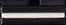

<!DOCTYPE html>
<html>
<head>
	<meta charset="utf-8">
	<title>EzSliderComp</title>
	<script type="text/javascript" src="js/react.min.js" ></script>
	<script type="text/javascript" src="js/JSXTransformer.js" ></script>
	<script type="text/javascript" src="js/jquery-1.11.0.js" ></script>
	<!--组件样式-->
	<style>
		.ez-slider{			
			position:relative;
			display:inline-block;
		}
		.ez-slider img.knob{
			position:absolute;
		}
	</style>
</head>
<body>
	<div id="content"></div>
	<script type = "text/jsx">
		//组件定义
		var EzSliderComp = React.createClass({
			//设置初始状态
			getInitialState : function(){
				return {
					moving : false, //标记是否在移动推子手柄
					oTop : 191, //在推子上按下鼠标时，推子手柄的top属性值
					left : 41,  //推子手柄的left属性值，保持不变
					top : 191,  //推子手柄的top属性值，根据鼠标位置变化
					value : 0.00 //根据推子手柄位置换算的0~10区间的值
				}
			},
			//在推子上按下鼠标时，设置moving标志
			onMouseDown : function(event){
				if(event.target.className != "knob") return;
				this.setState({moving :true,oTop:this.state.top,y:event.clientY})
			},
			//如果moving标志已经置位，则根据鼠标位置设置推子手柄位置
			onMouseMove : function(event){
				//禁止浏览器默认行为
				event.preventDefault();
				if(!this.state.moving) return;
				
				//计算推子手柄位置
				var deltaY = event.clientY - this.state.y,
					nTop = this.state.oTop + deltaY,
					value = (10 - (nTop - 38)*10/(191-38)).toFixed(2);
					
				//如果推子手柄top值在有效范围内，设置推子位置和值	
				if(nTop <= 191 && nTop >= 38){
					this.setState({top:nTop,value : value});
					this.props.onChange && this.props.onChange(value);
				}
			},
			//松开鼠标时，复位moving标志
			onMouseUp : function(event){
				this.setState({moving:false});
			},
			render : function(){
			
				//根据当前状态设置推子手柄位置和鼠标形状
				var knobStyle = {
					left : this.state.left,
					top : this.state.top,
					cursor : this.state.moving ? "pointer" : "default"
				};
				//属性包
				var props = {
					className : "ez-slider",
					onMouseDown : this.onMouseDown,
					onMouseUp : this.onMouseUp,
					onMouseMove : this.onMouseMove
				};
				
				return 	<div {...props}>
							
							
						</div>;
			}
		});
		//渲染
		React.render(
			<div>
				<EzSliderComp/>
				<EzSliderComp/>
				<EzSliderComp/>
				<EzSliderComp/>
			</div>,
			document.querySelector("#content"));

	</script>
</body>
</html>
<!--
	在JSX中，有时一个React元素的属性很多，比如在示例代码中设置音量推子组件 的属性：

//JSX
<div classname="ez-slider" onmousedown="{this.onMouseDown}" onmousemove="{this.onMouseMove}" onmouseup="{this.onMouseUp}"></div>
JSX有一个很好的特性让我们可以给React元素设置一个JSON对象作为属性包，这个属性 包将按照字段展开为分立的React元素的属性，被称为可展开属性。使用如下 方式在React元素上声明一个可展开属性，其中propbag是一个JSON对象：

<any {...propbag}=""></any>
比如，前面的示例使用可展开属性的方式改写为：

//定义属性包
var props = {
    className : "ez-slider",
    onMouseDown : this.onMouseDown,
    onMouseUp : this.onMouseUp,
    onMouseMove : this.onMouseMove
};
 
//传入属性包
var rel = <div {...props}=""></div>;
-->